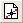
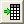
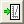

関連する動画はこちら：Enhanced Digitizer
関連する動画はこちら：Enhanced Digitizer |
デジタイザは、グラフのイメージからデータを取得するツールです。Originにグラフの画像ファイルをインポートし、データポイントを自動または手動で数値化します。
デジタイザを開くには、標準ツールバーのイメージのデジタイズボタンをクリックするか、メインメニューのツール：デジタイザを選択します。ダイアログではボタンとメニューで様々な設定ができます。下部パネルには状況に応じたヒントが表示されます。
デジタイザでは、直交座標、三角座標、極座標系をサポートしています。デジタイザに画像をインポートすると、デジタイザのメニューから座標系を選択できます。
| 直交座標系のデジタイザ | 三角座標系のデジタイザ |
| 極座標系のデジタイザ | |
| |
Originで画像を開き、デジタイザツールにインポートします。クリックするとImagesダイアログが開きます。デジタイズしたい画像ファイルを参照して選択します。 |
|---|---|
| |
現在のクリップボードから画像をインポートします。 |
|
定義した回転角で画像を回転します。 | |
| |
直交座標系が選択されているときに、クリックして軸の編集モードにします。画像内の位置が分かっている場所までX軸とY軸の線をドラッグして、表内でその位置とスケールタイプを指定します。Ctrl+マウスホイールで、スクロールバーで拡大縮小できます。もう一度クリックして軸の編集モードを閉じます。 |
| |
極座標系が選択されているときに、クリックして軸位置モードにします。 もう一度クリックして軸の編集モードを閉じます。 |
|
三角座標系が選択されているときに、クリックして軸位置モードにします。 もう一度クリックして軸の編集モードを閉じます。 | |
| |
クリックしてデータポイントの選択モードにします。マウスまたはキーボードを使って位置を決定します。Enterキーを押すか、マウスをダブルクリックしてデータポイントをデジタイズします。完了をクリックして終了します。再度ポイント選択モードにしたり、他のモードを使用して既存データにポイントを追加できます。 |
| |
クリックして、ポイントによる自動トレースモードにします。曲線上の目的のポイントの取得のためにダブルクリックするか、Enterを押して自動トレースを開始します。完了をクリックして終了します。再度自動トレースモードにしたり、他のモードを使用して既存データにポイントを追加できます。 |
| |
クリックして、グリッドによる自動ポイント取得モードにします。クリック&ドラッグで目的のポイントの領域を選択します。再度ポイント領域のデジタイズモードにしたり、他のモードを使用して既存データにポイントを追加できます。 |
|
クリックして領域の自動トレースモードにします。クリック&ドラッグで目的のポイントの領域を選択します。再度ポイント領域のデジタイズモードにしたり、他のモードを使用して既存データにポイントを追加できます。 | |
| |
クリックして境界を制限した領域の自動トレースモードにします。クリック&ドラッグで目的のポイントの領域を選択します。再度ポイント領域のデジタイズモードにしたり、他のモードを使用して既存データにポイントを追加できます。 |
| |
クリックしてポイントの削除モードにします。クリック&ドラッグして選択した領域内の全ての選択データを削除します。 |
|
クリックすると、Xまたはtheta値で昇順になるように取得したデータを整理します。 | |
| |
クリックするとラベルモードになります。デジタイズしたデータポイントをダブルクリックして、テキストラベルを追加します。もう1度クリックしてラベルモードを終了します。このボタンは、データポイントの選択が済んだときにのみ利用できます。 |
| |
別のプロットのデータポイントを選択します。これにより新しい出力列が作成され、データタブで新しい行が追加されます。必要に応じて軸を調整し、新しいデータの開始ボタンをクリックして、新しいデータのデジタイズを開始します。 |
| |
データタブでアクティブな線を削除します。 |
|  |
選択したデータポイントの座標値を含む結果ワークシートに移動します。 |
|  |
元の画像に移動します。 |
| |
選択したデータポイントから生成されたグラフに移動します。 |
| |
デジタイズしたポイント、ワークシート、グラフのすべてを削除します。 |
オプションダイアログでデジタイザツールの共通オプションを設定できます。ダイアログを開くには、設定：オプションを選択します。
シンボルの項目では、取得したデータポイントの色、サイズを設定でき、結果ワークシートの名前を決められます。
| 結果ワークシート名 | 選択したデータポイントの座標値を含む結果ワークシートの名前を指定できます。 |
|---|---|
| 色 | 取得したデータポイントの色を選択します。 |
| シンボル | 取得したデータポイントのシンボルの形状を選択します。 |
| サイズ | 取得したデータポイントのサイズを入力または選択します。 |
座標系が直交座標系の場合のみ、X軸目盛ラベルのタイプとY軸目盛ラベルのタイプの項目を利用できます。目盛ラベルには、数値、時間、日付の3つのフォーマットがサポートされています。最後の2つのフォーマットを選択した場合、表示ドロップダウンメニューで表示のカスタマイズが可能です。
画像ファイルかクリップボードから画像をインポートできます。以下のように操作します。
または、
Note: アクティブウィンドウが何もインポートされていないイメージウィンドウの場合、Ctrl + Cを押して画像をクリップボードにコピーでき、クリップボードからインポート  ボタンをクリックすることでデジタイザにインポートできます。
ボタンをクリックすることでデジタイザにインポートできます。
後で行うデジタイズ操作を簡単にするために、インポートした画像に対して、回転やグリッド線の削除、背景除去といった前処理を行うことができます。
画像を回転するには、イメージの回転ボタンをクリックするか、デジタイザのメニューから画像：回転を選択して画像回転ダイアログを開きます。
| 回転角(度) |
画像を回転したい度数を選択または入力します。 |
|---|---|
| および、 |
これら2つのボタンを使って、画像を時計方向または反時計方向に少し回転します。回転増分は、左右回転(<<, >>)の角度増分(度)編集ボックスで指定します。 |
| 左右回転(<<, >>)の角度増分(度) |
| Note:いったんポイントの取得を行うと、画像の回転操作は行えません。 |
このオプションは、元のグラフイメージ内のグリッド線を除去し、プロットをクリアに表示させます。メニューから画像：直交グリッド線を削除を選択して操作します。
このオプションは、背景色(白でない場合)を消し、ノイズを削除します。メニューから画像：背景を削除を選択して操作します。
画像：元に戻すを選択して画像を処理した操作を1つ元に戻すことができ、画像：リセットを選択して画像に対する全ての処理を元に戻すことができます。 |
一度デジタイザツールに画像がインポートされると、デフォルトでは直交座標系の軸が選択されます。座標系を変更するには、軸メニューを開き、対応する座標系を選択します。
極座標の設定または三点（ターナリ座標）の設定を選択した場合、極座標の設定あるいは三角座標の設定ダイアログで座標の基本設定を行う必要があります。
メニューから軸：極座標を選択すると、ダイアログが開きます。
このダイアログでは、インポートされた画像での軸の方向(時計回りまたは反時計回り)を定義します。
また、角度の単位(thetaの単位)として度、ラジアン、グラジアンのどれを使用するか定義します。
メニューから軸：三角座標を選択すると、ダイアログが開きます。
このダイアログでは、インポートされた画像での軸の方向(時計回りまたは反時計回り)を定義します。
また、変数の範囲は、0から1または0から100のどちらを使用するか指定します。
データポイントのデジタイズを行うには、座標系を構成する必要があります。
直交座標系を選択し、軸の編集ボタン が押されているとき、2対の軸ライン(X1, Y1 および X2, Y2) が画像に表示されます。これら2対のラインは、それぞれ青または赤で色分けされています。色列のセルをクリックして、そのラインの色を変更することができます。1つのラインが選択されているとき、ダイアログの対応する行も選択されます。逆も同様です。ラインを画像内の座標がわかっている位置までドラッグし、その座標値を軸値列に入力します。イメージピクセル列は、ピクセル単位で線の位置を表示します。このツールでは線形、Log10、Lnの3つの軸スケールタイプが使用できます。画像の軸スケールに合わせてスケールタイプ列を切り替えることができます。
が押されているとき、2対の軸ライン(X1, Y1 および X2, Y2) が画像に表示されます。これら2対のラインは、それぞれ青または赤で色分けされています。色列のセルをクリックして、そのラインの色を変更することができます。1つのラインが選択されているとき、ダイアログの対応する行も選択されます。逆も同様です。ラインを画像内の座標がわかっている位置までドラッグし、その座標値を軸値列に入力します。イメージピクセル列は、ピクセル単位で線の位置を表示します。このツールでは線形、Log10、Lnの3つの軸スケールタイプが使用できます。画像の軸スケールに合わせてスケールタイプ列を切り替えることができます。
メニューの軸：X参照線を表示または軸：Y参照線を表示を使用して、軸設定を確かめるために、X/Y参照線を画像内に表示することができます。この線を画像内で分かっている座標までドラッグし、軸値の列の値が画像内の参照線での実際の座標値に合っているかをチェックします。
極座標系を選択し、軸の編集ボタン が押されているとき、2対のポイント(P1、P2 および P3、P4)が画像に表示されます。ポイントを画像内の座標が分かっている位置までドラッグします。それぞれの対は同じ方位角(半径線に従う)である必要があります。そして、シータと半径の列に座標値を入力します。イメージピクセル列は、ピクセル単位でポイントの位置を表示します。
が押されているとき、2対のポイント(P1、P2 および P3、P4)が画像に表示されます。ポイントを画像内の座標が分かっている位置までドラッグします。それぞれの対は同じ方位角(半径線に従う)である必要があります。そして、シータと半径の列に座標値を入力します。イメージピクセル列は、ピクセル単位でポイントの位置を表示します。
三角座標系を選択し、軸の編集ボタン が押されているとき、3つの参照ポイント (P1, P2 および P3)が画像に表示されます。これら3つのポイントをドラッグして、三点グラフの頂点に配置します。軸の値列のドロップダウンリストで頂点の座標を選択できます。イメージピクセル列は、ピクセル単位でポイントの位置を表示します。
軸を右クリックして軸設定を保存します。保存するのは.ois形式で、このファイルをロードすれば軸設定を適用できます。
軸の設定後、画像内のデータプロットからデータポイントを取得できます。ポイント取得には次の方法があります。
データポイントを取得した後、データポイントの順序変更や、削除、ラベル追加、新しいデータプロットのポイント取得を開始するなどの操作が可能です。
任意の位置にあるポイントを1つずつ手動で取得できます。これは、手動でポイントを選択ボタン をクリックするか、メニューからデジタイズ：手動でポイントを選択を選択します。画像内で取得したいデータポイントの上にカーソル
をクリックするか、メニューからデジタイズ：手動でポイントを選択を選択します。画像内で取得したいデータポイントの上にカーソル を移動すると、デジタイザの拡大パネルに表示されます。パネルの右側にあるスクロールバーで拡大率を調節しながらデータポイントの位置を確認できます。
を移動すると、デジタイザの拡大パネルに表示されます。パネルの右側にあるスクロールバーで拡大率を調節しながらデータポイントの位置を確認できます。
ダブルクリックまたは、Enterキーを押すとポイントを選択でき、ポイントを打って下さいダイアログにデータポイントの値が表示され、同時にデータ表示ウィンドウに画像ピクセルでの値が表示されます。また、取得したデータポイントは編集や削除が可能です。
データポイントの取得が終わったら、ポイントを打って下さいダイアログの完了ボタンをクリックすると、データタブの中間のパネルにデジタイズされた線が表示されます。取得したポイントをワークシートに出力する前に、取得したデータセットの順序を変えたり、ラベルを追加できます。
自動トレースが有効で、データポイントが目的のポイントとして選択されると、同じ曲線(正確には、曲線の同じ部分)にある他のデータポイントが自動で検索され、選択されます。
これを使用するには、 ボタンをクリックするか、デジタイズ：ポイントによる手動トレースを選択します。そして、ダブルクリックして画像から目的のポイントを選択します。完了したら、完了ボタンをクリックするか、Ctrl+Enterキーを押します。
ボタンをクリックするか、デジタイズ：ポイントによる手動トレースを選択します。そして、ダブルクリックして画像から目的のポイントを選択します。完了したら、完了ボタンをクリックするか、Ctrl+Enterキーを押します。
自動トレースが有効なとき、デジタイザツールのプレビューウィンドウには拡大画像が表示されます。カーソルを画像上で移動すると、このウィンドウの上部に現在の位置が有効であるかのヒントが表示されます。 |
領域デジタイズオブジェクト(XまたはY方向のグリッド線付き矩形オブジェクト)を使用してデータポイントを選択します。グリッド線と交わるデータポイントが選択され、取得されます。
このツールを使用するには、 ボタンをクリックするか、デジタイズ：グリッドによるポイントの自動取得を選択し、画像上で目的のポイントの領域をクリック&ドラッグして選択します。
ボタンをクリックするか、デジタイズ：グリッドによるポイントの自動取得を選択し、画像上で目的のポイントの領域をクリック&ドラッグして選択します。
領域デジタイズオブジェクト(グリッドによるポイントの自動取得と同様)を使用してデータポイントを自動で取得します。このモードを使用する場合、グリッド線と交差するデータポイントが選択、取得され、データポイントは、線の自動トレースのためのソースポイントとして使用されます(ポイントによる自動トレースを参照)。
このツールを使用するには、ボタンをクリックするか、デジタイズ：領域の自動トレースを選択し、画像上で目的のポイントの領域をクリック&ドラッグして選択します。
領域デジタイズオブジェクト(グリッドによるポイントの自動取得と同様)を使用してデータポイントを自動で取得します。このモードは、領域デジタイズオブジェクトで定義された領域で自動トレースを行うという点以外は、領域の自動トレースモードと同様です。
このツールを使用するには、 ボタンをクリックするか、デジタイズ：境界を制限した領域の自動トレースを選択し、画像上で目的のポイントの領域をクリック&ドラッグして選択します。
ボタンをクリックするか、デジタイズ：境界を制限した領域の自動トレースを選択し、画像上で目的のポイントの領域をクリック&ドラッグして選択します。
グリッドの方向や領域デジタイズオブジェクトの密度を変更するには、メニューから設定：デジタイズの設定を選択して開くデジタイズの設定ダイアログで行います。
| グリッド | グリッド方向を指定します。
|
|---|---|
| dx (ピクセル | 隣り合うグリッドのピクセル単位での間隔。入力可能な最小の値は1です。 |
| ピクセル削減要因 | デジタイザのピクセル削減要因を指定 |
デジタイズしたら、完了をクリックしてデジタイザダイアログに戻ります。画像にあるすべての選択したデータポイントに対して、次のことができます。
| Note: デジタイズ中は選択したデータポイントを編集または削除することができません。 デジタイズ中にEscキーを押すと、それ以前に選択したデータポイントが解除され、デジタイザがリセットされます。 |
|
直交座標、極座標系で取得した全てのポイントは整理でき、Xやシータの昇順で並べることができます。
これを行うには、元の画像をアクティブにして、ボタンをクリックするかデジタイズ：ポイントを整理を選択します。
データにラベルを追加するには、ラベルのセットボタン をクリックするか、メニューからデジタイズ：ラベルのセットを選択し、データポイントをダブルクリックしてテキストを入力します。 OK をクリックして、ラベルを追加します。 ラベルを持つデータポイントは緑色で表示されます。
をクリックするか、メニューからデジタイズ：ラベルのセットを選択し、データポイントをダブルクリックしてテキストを入力します。 OK をクリックして、ラベルを追加します。 ラベルを持つデータポイントは緑色で表示されます。
新しいデータプロットからポイントを取得するには、新しい線ボタン をクリックするか、デジタイズ：新しい線を選択します。データタブの中間のパネルで、データ名のセルでダブルクリックして取得したデータセットの名前を変更したり、グループのリストからグループを選択できます。データタブから取得したデータセットを削除するには、線を選択して線を削除ボタンをクリックします。
をクリックするか、デジタイズ：新しい線を選択します。データタブの中間のパネルで、データ名のセルでダブルクリックして取得したデータセットの名前を変更したり、グループのリストからグループを選択できます。データタブから取得したデータセットを削除するには、線を選択して線を削除ボタンをクリックします。
複数の取得データセットを単一のデータセットに統合したい場合、CTRLキーを押しながらデータセットを選択し、右クリックして線の統合を選択するか、メニューからデジタイズ：線の統合を選択します。
データタブ内のデータプロットを削除したい場合、CTRLキーを押しながら対応する行を選択し、デジタイズ：線の削除を選択するか ボタンをクリックします。
ボタンをクリックします。
軸の設定とポイントの取得が完了したら、選択されたデータポイントの座標をワークシートやグラフに出力できます。
デジタイザダイアログを閉じると、画像にボタンが表示されます。このボタンをクリックすると、デジタイザダイアログを再度開けます。 |